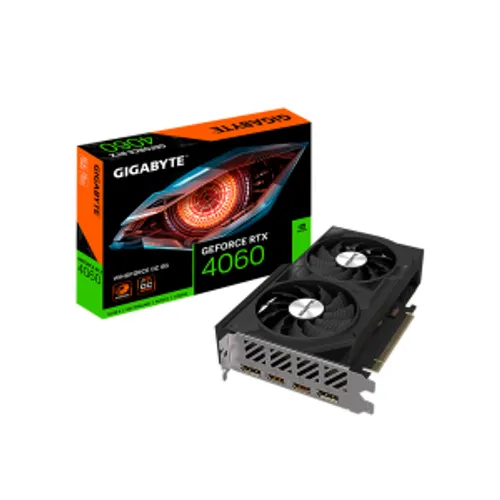

Placa de Video RX 7800 XT
Precio de Lista: $550.00
La tarjeta gráfica Radeon RX 7800 XT ofrece un rendimiento extraordinario para entusiastas de los videojuegos en 1440p, impulsada por la arquitectura avanzada AMD RDNA 3 y equipada con una gran memoria de video de última generación.
Especificaciones Técnicas:
- Memoria VRAM: 16GB GDDR6
- Interfaz de Memoria: 256-bit
- Reloj de Aumento: Hasta 2430 MHz
- Procesadores de Flujo: 3840 unidades
- Consumo Recomendado: Fuente de 700W